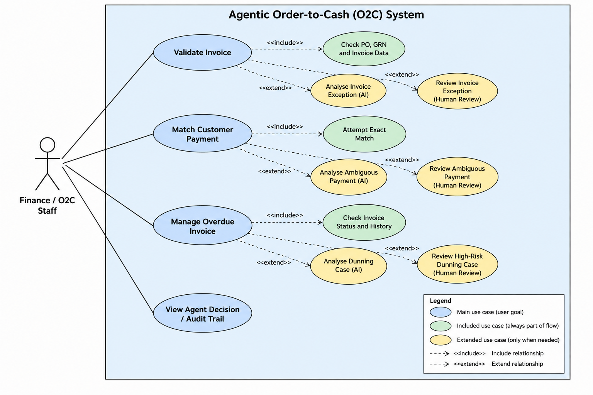
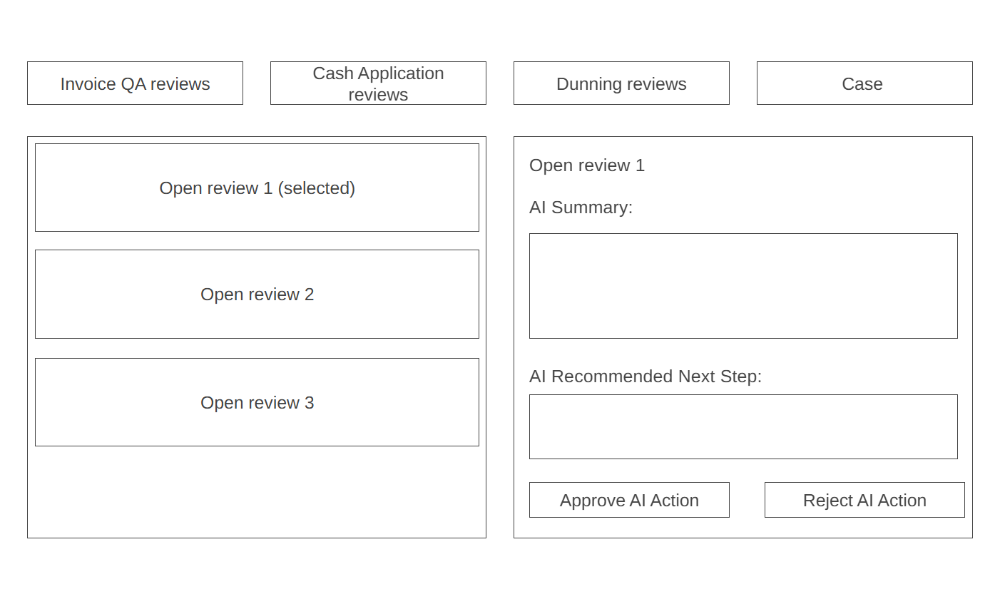
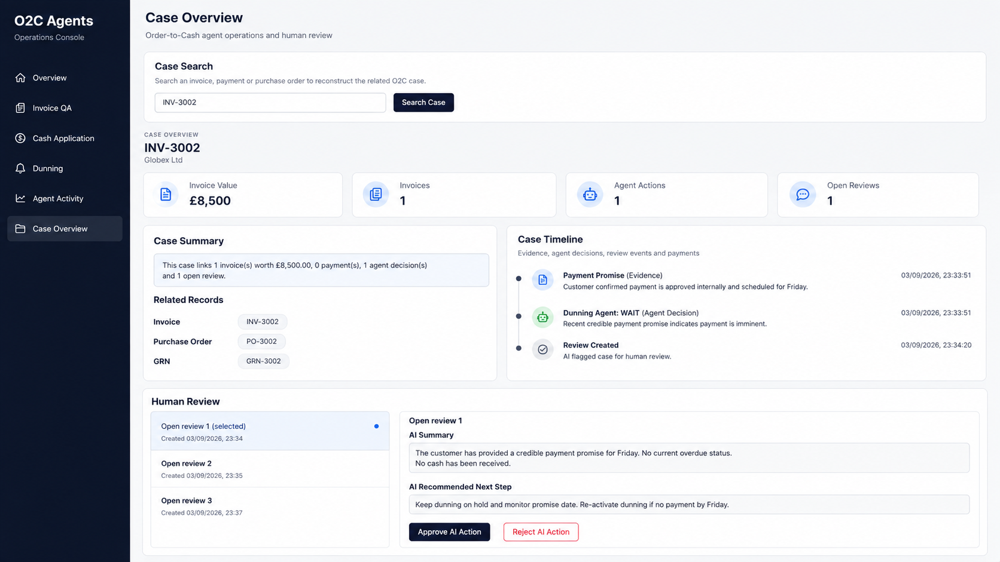
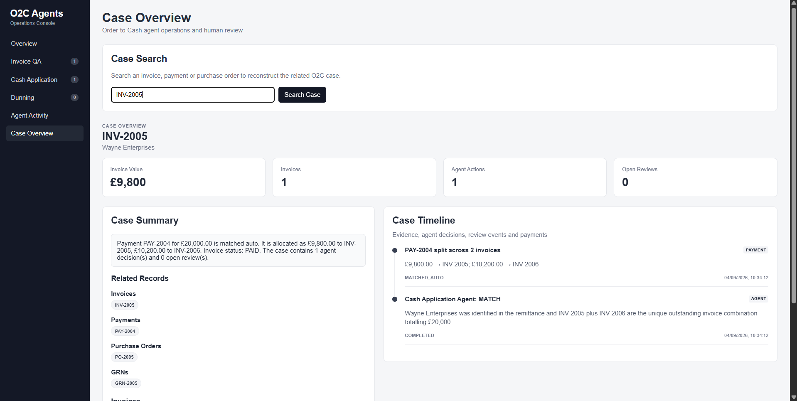
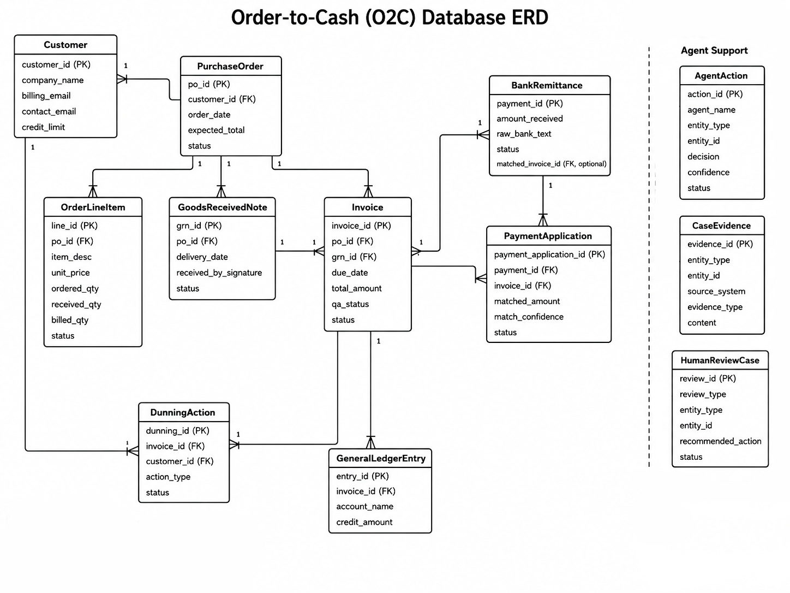
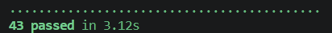

Invoice QA Agent
Validates invoices against purchase orders and goods received records. Clean matches are approved deterministically, supported discrepancies can be analysed by AI, and unresolved cases are escalated for human review.
Agentic Operations for Order-to-Cash
A hybrid Order-to-Cash system that combines deterministic ERP-style checks with specialised AI agents to reduce manual investigation while preserving human oversight.
Introduction
Order-to-Cash (O2C) is the end-to-end business process that begins when a customer places an order and finishes when payment is received and revenue is recorded. Although the process appears straightforward, many stages rely on rigid enterprise software and manual human intervention when something does not exactly match the expected format.
Traditional Enterprise Resource Planning (ERP) systems are effective at storing structured business records and applying predefined rules, but they often struggle with ambiguity and unstructured information. Small inconsistencies, such as minor discrepancies on an invoice or purchase order, missing references in a bank transfer, or unusual customer communications, can interrupt an automated workflow and require a person to investigate the case manually, delaying the overall process.
Project aim
The aim of this project is to investigate whether a network of AI agents can take over some of the complex decision-making traditionally performed by enterprise software and human workers within the O2C process.
Rather than relying entirely on rigid business logic, the proposed architecture separates data storage from decision-making. The database stores O2C records such as customers, purchase orders, goods received notices, invoices and payments, while specialised agents analyse this information and decide how the workflow should continue.
The intention is not to remove human involvement completely. Instead, the system aims to reduce repetitive investigation and allow human users to focus on cases where judgement, accountability or additional evidence is required.
The Order-to-Cash process
At each stage, exceptions may prevent the process from continuing automatically. Examples include inconsistent documents, missing information, overdue payments, unclear bank remittances and financial discrepancies.
AI agents provide an opportunity to interpret these cases using both structured transaction data and contextual evidence that would normally require human judgement, saving time and reducing manual effort.
Our approach
The current implementation combines conventional ERP-style business logic with AI reasoning. Clear cases are handled using deterministic rules. For example, invoice quantities can be compared directly against purchase orders and goods received records, while payments can first be matched using exact invoice references and amounts.
If these checks cannot confidently resolve the case, the relevant information is passed to an AI agent. The agent analyses the available evidence and returns a structured recommendation including a decision, explanation and confidence score. Where the agent cannot safely resolve the case, the result is escalated for human review.
This keeps straightforward financial checks predictable while allowing AI to add value in cases that depend on context or semantic interpretation.
Implemented agents
Validates invoices against purchase orders and goods received records. Clean matches are approved deterministically, supported discrepancies can be analysed by AI, and unresolved cases are escalated for human review.
Matches incoming bank payments to outstanding invoices. Exact amount and reference matches are handled automatically, while ambiguous remittances are analysed by AI or escalated.
Supports collection of overdue payments by considering invoice status, previous reminders, payment promises and risk before recommending the next action.
Key features
Agents can consider contextual evidence as well as structured O2C records.
Straightforward cases are resolved without calling an AI model unnecessarily.
Cases that remain uncertain or require accountability can be escalated.
Outputs can include a decision, reason, confidence, risk and recommended action.
Agent decisions and escalations are stored so outcomes can later be reviewed.
The overall objective is to explore whether agentic AI can make the O2C process more flexible than a purely rule-driven system while remaining controlled, traceable and suitable for human oversight.
Requirements + Use Cases
Requirements were prioritised using the MoSCoW method so that the core O2C automation and human-review functionality remained the main focus of the implementation.
MoSCoW priorities
| ID | Priority | Requirement | Related area |
|---|---|---|---|
| FR1 | Must | Validate invoices against purchase order and goods received information. | Invoice QA |
| FR2 | Must | Detect invoice discrepancies and analyse unresolved exceptions. | Invoice QA |
| FR3 | Must | Match incoming bank remittances to outstanding invoices. | Cash Application |
| FR4 | Must | Identify overdue invoices and recommend an appropriate dunning action. | Dunning |
| FR5 | Must | Escalate unresolved or unsuitable cases for human review. | All agents |
| FR6 | Must | Store agent decisions, reasoning, confidence and status for auditability. | Audit trail |
| FR7 | Should | Display review queues and reconstructed O2C cases in a user interface. | Frontend |
| FR8 | Should | Store contextual evidence that can be used by agents during analysis. | Agent support |
| FR9 | Could | Generate draft customer communications for suitable collection actions. | Dunning |
| FR10 | Won't | Fully automate all O2C stages without human oversight in the current prototype. | Scope boundary |
| ID | Priority | Requirement |
|---|---|---|
| NFR1 | Must | Agent decisions should be explainable and traceable. |
| NFR2 | Must | The system should avoid silently accepting malformed or unsupported AI outputs. |
| NFR3 | Must | The architecture should keep individual agents modular and maintainable. |
| NFR4 | Should | The interface should make escalated cases easy to understand and review. |
| NFR5 | Should | Straightforward deterministic cases should avoid unnecessary LLM calls. |
| NFR6 | Could | The application could support role-based access and separation of duties. |
Use case diagram
The main user is a finance or O2C staff member who monitors automated workflows and reviews cases that the agents cannot safely resolve. Core use cases include validating invoices, matching customer payments, managing overdue invoices, reviewing escalated cases and viewing the audit trail.

Research + Design Choices
Research focused on O2C bottlenecks, the limitations of rigid business rules, and the role AI can play in interpreting contextual evidence.
O2C bottlenecks
Orders may arrive in inconsistent formats, requiring manual interpretation or data entry.
Delivery records and order status may need reconciliation before later stages can continue.
Document discrepancies can break exact matching and require investigation.
Late payments, disputes and unclear remittance text create manual workload.
Transactions must be reconciled and recorded accurately before the O2C cycle closes.
Agent selection
Invoice QA, Cash Application and Dunning were prioritised because they represent major points of manual investigation within the O2C process. Invoice QA involves resolving document discrepancies, Cash Application deals with ambiguous payment matching, and Dunning requires judgement about overdue accounts and collection actions.
Together, they cover three different human bottlenecks: validation, reconciliation and collections. This made them suitable areas for testing how AI could reduce manual effort while still using deterministic checks and human review where needed.
Design choice
Human-in-the-loop design
The implemented agents return structured outcomes rather than unrestricted natural-language responses. Where the result is explicitly marked for human review, or where the available evidence does not support a safe automated outcome, a review record can be created for a finance user.
Confidence and risk values are useful supporting signals, but they should not be treated as proof that an AI decision is correct. Human review remains important for cases with higher financial or compliance consequences.
UI Design
The interface is designed around one operational dashboard with dedicated views for review queues, agent activity and complete case reconstruction.
Main navigation
High-level view of O2C operations and outstanding work.
Invoice exception reviews requiring attention.
Ambiguous or escalated payment matching cases.
Collection cases and escalated overdue invoices.
Search and reconstruct an O2C case, including evidence and agent activity.
Wireframes and mock-ups



UI design goals
Show the reason for escalation without forcing users to inspect raw database records.
Use a case timeline to show evidence, agent decisions and review events in sequence.
Keep the AI summary and recommended next step visible alongside the relevant case information.
Proposed Design + Implementation
The application separates data storage, deterministic business logic, AI-assisted reasoning, backend APIs and the review interface.
Application architecture
Deterministic business checks are performed before AI is used. If a clear and safe outcome can be determined, the workflow continues without an LLM call. Otherwise, relevant case data and evidence are passed to the appropriate specialist agent.
The resulting structured recommendation is then either executed automatically or escalated for human review, depending on confidence, risk and available evidence. Any resulting state changes are persisted through the backend and reflected in the user interface.
Database design

The database was designed to represent both the transactional O2C lifecycle and the agentic decision-making layer. Core entities such as customers, purchase orders, goods received notes, invoices and payments are connected using conventional foreign-key relationships.
Separate tables for CaseEvidence, AgentAction and
HumanReviewCase support AI reasoning, auditability and human
escalation.
These tables use a generic entity_type and
entity_id pair so that the same evidence and review infrastructure
can be reused across invoices, payments and other O2C entities.
Agent design
Testing Strategy
The system was tested at multiple levels to verify both the traditional O2C business logic and the new agent-assisted workflows. The automated test suite currently contains 43 passing tests.
Testing approach
The testing strategy was designed to separate deterministic business logic from AI-dependent behaviour wherever possible. This is important because functions such as quantity comparison, payment allocation and invoice status updates should behave predictably and can therefore be tested directly.
Agent behaviour was tested using mocked AI responses rather than live model calls. This makes the automated test suite repeatable, avoids consuming Azure OpenAI credits, and ensures that failures represent problems in the application logic rather than changes in model output or network availability.
Database tests use isolated in-memory SQLite databases, meaning that running the test suite does not alter the main demonstration database used by the application.
Individual business rules and parsing functions are tested independently, including invoice matching, payment matching, dunning checks and validation of structured AI responses.
Agent workflows are tested with mocked AI outputs to verify that decisions such as ACCEPT, MATCH, WAIT and HUMAN_REVIEW are routed correctly.
FastAPI endpoints are tested using an isolated database to confirm that human decisions, payment allocations, review outcomes and agent actions are persisted correctly.
Complete O2C success, failure and dunning paths are tested to verify the sequence of events across purchase orders, fulfilment, invoicing, payment and revenue recording.
Invoice QA testing
Invoice QA tests verify both the deterministic three-way matching logic and the behaviour of the workflow when an exception requires AI analysis. Particular attention was given to ensuring that clean cases do not call the AI unnecessarily.
| Test scenario | Expected behaviour |
|---|---|
| Clean PO, GRN and invoice match | Invoice is accepted and the AI path is bypassed. |
| Quantity discrepancy | The mismatch is detected before the case reaches AI analysis. |
| AI returns ACCEPT | The controller records successful Invoice QA completion. |
| AI returns HUMAN_REVIEW | The invoice is routed to the human-review workflow. |
| Human reviewer approves invoice | The review is resolved and the invoice QA status is updated to MATCH. |
Cash Application testing
Cash Application testing covers exact payment matching, ambiguous remittances, split payments and manual allocation. The tests also verify that payment allocations cannot exceed either the payment amount or the remaining balance of an invoice.
| Test scenario | Expected behaviour |
|---|---|
| Exact invoice reference and payment amount | The payment is matched automatically without an AI call. |
| Unique split across two invoices | Two PaymentApplication records are created and both invoices are updated. |
| Ambiguous payment | The payment is escalated for human review. |
| Manual allocation does not equal payment total | The API rejects the allocation. |
| Allocation exceeds an invoice balance | The API rejects the over-allocation. |
| Valid manual allocation | The allocation is stored and the payment is marked MATCHED_MANUAL. |
Dunning testing
Dunning tests verify that simple invoice states are handled deterministically before AI is used, and that risky AI recommendations cannot silently proceed.
| Test scenario | Expected behaviour |
|---|---|
| Invoice is not yet due | No dunning action is required. |
| Invoice is disputed | The case is sent directly for human review. |
| Credible payment promise | The agent may return WAIT and the controller records the decision. |
| High-risk AI result | The workflow forces HUMAN_REVIEW even if the AI initially recommends a reminder. |
| Human reviewer selects WAIT | A DunningAction is persisted in the case history. |
API and audit testing
The backend API was tested using FastAPI's test client. These tests verify that the information displayed by the frontend reflects confirmed database state rather than speculative relationships.
Demonstration-case testing
The seeded demonstration data is also tested to ensure that records intended for live agent demonstrations begin in an unprocessed state. This prevents historical AgentAction or HumanReviewCase records from making a demonstration appear to have already been processed.
| Record | Tested initial state |
|---|---|
| INV-LIVE-001 | Invoice QA begins with PENDING status and no previous agent outcome. |
| PAY-LIVE-001 | Payment begins UNPROCESSED with no allocations, agent actions or review cases. |
| INV-LIVE-002 | No previous AgentAction or HumanReviewCase exists. |
PAY-LIVE-001 is also processed during an automated test. The test confirms that the payment is split between two invoices using deterministic logic, that the AI function is never called, that two PaymentApplication records are created, and that both invoices are marked as paid.
Automated test results

pytest -q
The automated test suite currently completes successfully with all 43 tests passing. AI responses are mocked during testing so that workflow behaviour can be tested deterministically without relying on live Azure OpenAI calls.
Manual testing
The automated suite primarily validates backend behaviour, persistence and agent-control logic. A short manual browser test is therefore also required to verify the user interface.
Testing limitations
Although the automated suite provides broad coverage of the prototype's core behaviour, it does not measure the real-world accuracy of the language model. Because AI responses are mocked during automated testing, a larger evaluation dataset would be required to measure how consistently the live model classifies genuine O2C exceptions.
Further work could also include automated frontend tests, performance testing with larger case volumes, security testing, and repeated evaluation of agent decisions against a labelled benchmark dataset.
Evaluation
The final evaluation should compare the completed implementation against the original requirements and discuss both technical quality and practical limitations.
Completed MoSCoW review
| Requirement area | Priority | Current outcome |
|---|---|---|
| Invoice QA workflow | Must | Implemented |
| Cash Application workflow | Must | Implemented |
| Dunning workflow | Must | Implemented |
| Human review records | Must | Implemented |
| Agent audit trail | Must | Implemented |
| Review dashboard | Should | Implemented / in current UI |
| Draft customer emails | Could | Future work |
| Full O2C agent network | Won't | Outside current scope |
Critical evaluation
The dashboard gives users one place to inspect review queues and reconstruct a case. The current interface is functional, but could be improved with stronger filtering, user roles and clearer prioritisation of urgent reviews.
The three implemented agents demonstrate the hybrid workflow successfully, but they cover only part of the full O2C lifecycle originally considered.
Deterministic branches are predictable, while AI-dependent branches require validation and controlled fallbacks to avoid malformed or unsupported decisions.
Running deterministic checks before AI reduces unnecessary model calls and keeps simple cases fast and inexpensive.
The modular backend design makes it possible to replace the prototype database or connect future enterprise data sources without rewriting every agent.
Separating agents, database models, case evidence and review records makes the application easier to extend than a single monolithic decision workflow.
A narrower implementation scope helped prioritise complete end-to-end agent workflows over partially implementing every proposed O2C agent.
Strengths and weaknesses
Future work
Appendices
These appendices provide practical information for someone who needs to use, run or further develop the prototype.
Appendix A
Once the application has been deployed, finance or O2C users can access the Operations Console in a web browser. The main navigation provides access to Overview, Invoice QA, Cash Application, Dunning, Agent Activity and Case Overview.
The review pages contain cases that could not be completed automatically. Users can inspect the relevant transaction data, contextual evidence, agent reasoning and recommended next action before making the required human decision.
Case Overview can be used to search for an invoice, payment or purchase order and reconstruct its wider O2C history, including related records, evidence, agent decisions, review events and payment activity.
Appendix B
The application consists of a Python backend, a Vue/Vite frontend and a local SQLite database. The following steps describe how to prepare and run the prototype locally.
Clone or extract the project repository onto the target machine and open the project folder.
Create and activate a Python virtual environment, then install the required Python dependencies from the repository.
Configure the required Azure OpenAI settings, including the API endpoint, key and deployment/model information used by the agents.
Create or restore the local SQLite demonstration database by running:
python seed_data.py
This loads the seeded Invoice QA, Cash Application and Dunning demonstration cases.
Start the FastAPI backend using the command defined by the final project configuration.
Open a second terminal in the Vue/Vite frontend folder, install the frontend dependencies if required, and start the development server.
The Operations Console can then be opened at:
http://localhost:5173
Confirm that the Operations Console loads correctly and that the Overview, Invoice QA, Cash Application, Dunning, Agent Activity and Case Overview pages can retrieve data from the backend.
Using the deployed system
Once the application is running, finance users can review existing demonstration cases through the Operations Console. The review pages show cases escalated by the Invoice QA, Cash Application and Dunning agents, while Case Overview can be used to inspect a case's related evidence and audit history.
Additional unprocessed demonstration records can also be passed through an agent from the command line. For example:
python -m agents.cash_application PAY-LIVE-001
After the command completes, refresh the web application and search for the processed record in Case Overview. The resulting decision, payment allocation and Agent Activity entry should then appear in the interface.
A successful deployment should allow the user to open the Operations Console, view seeded cases, run a live agent demonstration and inspect the resulting decision through Case Overview and Agent Activity.
Appendix C
O2C systems may process customer names, contact details, financial information and communications. A production system would therefore need appropriate access controls, data minimisation, retention policies and secure handling of personal or commercially sensitive information.
AI-generated recommendations should remain reviewable and auditable. Human users should be able to understand what information informed a decision and intervene where an automated outcome is inappropriate.
High-impact financial actions should respect approval thresholds, separation of duties and existing organisational controls rather than allowing an AI agent to bypass them.
Model-generated confidence and reasoning should be treated as supporting information rather than a guarantee of correctness. Important decisions require validation and clear escalation routes.